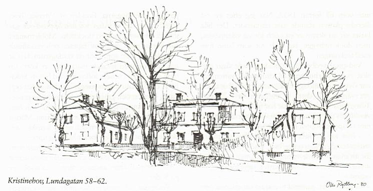

|
 Gubbhus utan gubbar
Gården härbärgerade från 1812 till 1907 åldringar tillhörande Borgerskapet och gick allmänt under benämningen Gubbhuset. Likt många andra, numera av staden ägda och förvaltade kulturhus av den här storleken, disponeras också de här lokalerna av föreningslivet. Den gamla kyrksalen fungerar som sammanträdes- och föreläsningslokal. På vinden har inretts sällskapsrum och matsal. Om utrymmena samsas Högalids Medborgarhusförening och "Vännernas Samfund Kväkarna". Samfundet har bekostat upprustning av den ena flygeln. Borgerskapet lever än i högsta välmåga, men åldringarna vistas nu i det 1908 öppnade kasernliknande Borgarhemmet på andra sidan Högalidsgatan. Det stora gula huset, ritat av Gustaf Wickman, är i all sin pompa vida synligt från Riddarfjärdens norra strand. Det inrymmer åtskilliga pensionärsrum med storartad utsikt över vattnet och staden. Det tidigare hemmet i malmgården ter sig idylliskt litet jämfört med den nyare, övermäktigt stora anläggningen, innanför vars tunga skal ändå må finnas värme och omsorg om de gamla. Byggherrarna till 1700-talets malmgårdar var många gånger välbärgade affärsmän i Stockholm. Kristinehov är inget undantag. Tomtmark öster om Heleneborgsområdet, och norr om Hornsgatan, såldes 1786 till bröderna Hans och Carl Gustaf Apiarie på Barnängen. Marken avsågs troligen att användas för tobaksodling. Tre år senafe inköptes fastigheten av grosshandlaren Georg Fredrik Diedrichsson, som lät bygga malmgården 1790. Det var en man som hade många järn i elden och som skapat sig en förmögenhet bland annat som sidenproducent och redare. 1799 kom han in som styrelsemedlem i den sociala inrättning som benämndes Gubbhuset. Här gjorde han en storartad insats genom att först donera 10 000 riksdaler och sedan genom testamente donera malmgården till Borgerskapets Gubbhus, vilket kunde öppnas i september 1812.
|